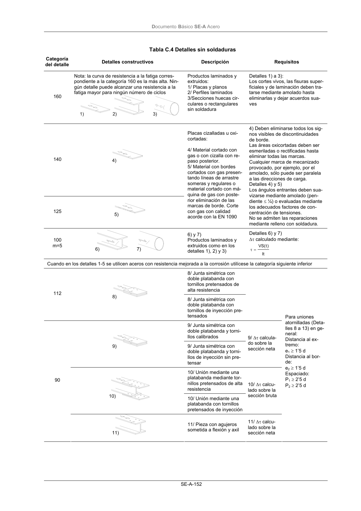

DB-SE-A Acero · edición 2007-10-23 · capa oficial
Documento DB-SE-A-oficial · SHA-256 del PDF 9ed9ea694aabfbda3bfbbef40dfe9223fde05d13c35bc2ba9751e5a96a22a64f
Página física 154 de 168.
Copia fiel del PDF fuente · Fuente oficial
Ficha de la disposición en la fuente oficial
Formato: Texto de la página (Markdown)
Documento Básico SE-A Acero SE-A-152 Tabla C.4 Detalles sin soldaduras Categoría del detalle Detalles constructivos Descripción Requisitos 160 Nota: la curva de resistencia a la fatiga corres- pondiente a la categoría 160 es la más alta. Nin- gún detalle puede alcanzar una resistencia a la fatiga mayor para ningún número de ciclos Productos laminados y extruidos: 1/ Placas y planos 2/ Perfiles laminados 3/Secciones huecas cir- culares o rectangulares sin soldadura Detalles 1) a 3): Los cortes vivos, las fisuras super- ficiales y de laminación deben tra- tarse mediante amolado hasta eliminarlas y dejar acuerdos sua- ves 140 125 Placas cizalladas u oxi- cortadas: 4/ Material cortado con gas o con cizalla con re- paso posterior. 5/ Material con bordes cortados con gas presen- tando líneas de arrastre someras y regulares o material cortado con má- quina de gas con poste- rior eliminación de las marcas de borde. Corte con gas con calidad acorde con la EN 1090 4) Deben eliminarse todos los sig- nos visibles de discontinuidades de borde. Las áreas oxicortadas deben ser esmeriladas o rectificadas hasta eliminar todas las marcas. Cualquier marca de mecanizado provocado, por ejemplo, por el amolado, sólo puede ser paralela a las direcciones de carga. Detalles 4) y 5) Los ángulos entrantes deben sua- vizarse mediante amolado (pen- diente ≤ ¼) o evaluadas mediante los adecuados factores de con- centración de tensiones. No se admiten las reparaciones mediante relleno con soldadura. 100 m=5 6) y 7) Productos laminados y extruidos como en los detalles 1), 2) y 3) Detalles 6) y 7) ∆τ calculado mediante: It )t( VS = τ Cuando en los detalles 1-5 se utilicen aceros con resistencia mejorada a la corrosión utilícese la categoría siguiente inferior 8/ Junta simétrica con doble platabanda con tornillos pretensados de alta resistencia 112 8/ Junta simétrica con doble platabanda con tornillos de inyección pre- tensados 9/ Junta simétrica con doble platabanda y torni- llos calibrados 9/ Junta simétrica con doble platabanda y torni- llos de inyección sin pre- tensar 9/ ∆τ calcula- do sobre la sección neta 10/ Unión mediante una platabanda mediante tor- nillos pretensados de alta resistencia 10/ Unión mediante una platabanda con tornillos pretensados de inyección 10/ ∆τ calcu- lado sobre la sección bruta 90 11/ Pieza con agujeros sometida a flexión y axil 11/ ∆τ calcu- lado sobre la sección neta Para uniones atornilladas (Deta- lles 8 a 13) en ge- neral: Distancia al ex- tremo: e1 ≥ 1’5 d Distancia al bor- de: e2 ≥ 1’5 d Espaciado: P1 ≥ 2’5 d P2 ≥ 2’5 d
